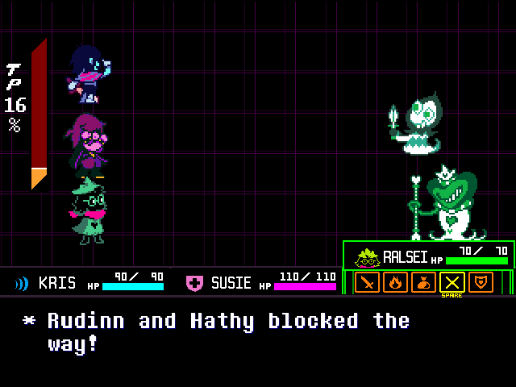

Jugabilidad
Sistema de combate por turnos

Los combates alternan tu turno (menú de acciones) y el turno enemigo (patrones de proyectiles tipo bullet hell). Dentro de un combate puedes derrotar o pacificar enemigos.
- Pelear: ataque directo con una barra de tiempo. Más daño si das en el momento justo.
- Actuar: acciones contextuales (hablar, analizar, provocar, elogiar…) que cambian estados y abren la opción de Perdonar.
- Magia: habilidades que consumen TP. Curas, potenciadores o efectos especiales.
- Objeto: usar consumibles para curar, mayor capacidad de evasión, entre otros.
- Defender: reduce daño recibido y genera TP.
- Perdonar: perdona enemigos cuando están listos (tras actuar de manera adecuada o bajar su “voluntad de pelear”).
Durante el turno enemigo, esquiva proyectiles. Rozar los ataques sin recibir daño genera TP extra, recompensando el riesgo.
Puzzles y minijuegos
Además de batallas, hay puzzles lógicos, secciones de ritmo y pequeños minijuegos que introducen mecánicas nuevas por capítulo. Resolverlos suele desbloquear rutas alternativas, cofres o escenas opcionales.
Decisiones y rutas
Tus elecciones en diálogos y combate afectan encuentros, escenas y opciones futuras. Ciertas combinaciones de acciones pueden abrir rutas alternativas más exigentes o enfrentar jefes secretos. El juego registra tu comportamiento y algunos personajes reaccionan de forma distinta en consecuencia.